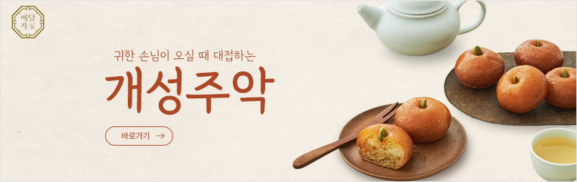

2024 PORTFOLIO X DESIGNER SUIN KIM
KIMSUIN
2024 PORTFOLIO X DESIGNER SUIN KIM
INTRODUCTION X DESIGNER SUIN KIM

“사용자의 입장에서 공감하는
디자이너 김수인입니다.”
-
ABOUT
김수인
1992.05.03
010.2762.1617
suindl@naver.com
-
LICENSE
2024.02 웹디자인기능사
2024.01 GTQ 포토샵1급
2023.08 한국사능력검정시험1급
2014.08 컴퓨터활용능력2급
-
EXPERIENCE
2020.07 ~ 2022.06 미래에셋증권 근무
2017.09 ~ 2018.03 모두투어네트워크 근무
2015.08 ~ 2016.12 DCC 근무
2015.02 ~ 2015.07 파리바게트 근무
2014.02 ~ 2014.12 롯데시네마 근무
-
EDUCATION
2008.03 ~ 2011.02 성남그린컴퓨터아카데미
UI/UX 반응형웹 디자인&퍼블리셔 양성과정
2020.06 ~ 2023.08 방송통신대학교 유아교육과
2012.03 ~ 2014.02 동서울대학교 호텔경영학과
2008.03 ~ 2011.02 서울 휘경 여자고등학교
INTRODUCTION X DESIGNER SUIN KIM
WEB DESIGN
01

오늘의집
홈페이지 바로가기(HTML)- 프로그램 Adobe photoshop
- 기여도 개인 100%
- 완성도 메인 / 서브1
- 색상
- POINT
- 기존 사이트에서 메뉴가 많고 볼거리가 많아
소비자에게 집중도를 높혀주기위해 중요 메뉴
위주로 메인에 디자인하였습니다.
색상은 기존 사이트의 색상을 유지하여
메인컬러로 사용하였습니다.
02
BMW
홈페이지 바로가기(HTML)- 프로그램 Adobe photoshop
- 기여도 개인 100%
- 완성도 메인 / 서브1
- 색상
- POINT
- 기존 사이트의 깔끔하고 세련되며 브랜드의 역동적이고
고급스러운 이미지의 컨셉을 유지하여,
메인 슬라이드에 영상을 넣어 역동적인 느낌을 강조하였다.
03
스토어봄
홈페이지 바로가기(HTML)- 프로그램 Adobe photoshop
- 기여도 개인 100%
- 완성도 메인페이지
- 색상
- POINT
- 기존사이트의 귀엽고 사랑스러운 느낌의 컬러를
사용하여 귀엽고 사랑스러운 느낌을 강조하였다.
04
노랑풍선
홈페이지 바로가기(HTML)- 프로그램 Figma
- 기여도 개인 100%
- 완성도 & nbsp; 메인 / 서브1
- 색상
- POINT
- 여행사의 자유롭고 활기찬 느낌을 분위기를 살려
풍부한 여행 이미지를 넣어 시각적인 효과를 주었다.
05
GOLDEN SEOUL HOTEL
홈페이지 바로가기(PDF)- 프로그램 Adobe photoshop
- 기여도 개인 100%
- 완성도 메인페이지
- 색상
- POINT
- 호텔사이트에서 찾은 전체 이미지의 고급스러운 느낌을 강조하여,
고급진 컬러의 색감을 사용하여 고급스러움을 강조하여 디자인했다.
06
PREMIUM STEAK
홈페이지 바로가기(HTML)- 프로그램 Adobe photoshop
- 기여도 개인 100%
- 완성도 메인 / 서브1
- 색상
- POINT
- 아웃백스테이크의 사이트를 참고하여 편안하고 가족적인 느낌을
강조하여 손님들이 편안하게 머무르고 싶어하는 분위기를 강조하였다.
색상은 맛있는 스테이크의 이미지와 비슷한 색상을 주어
스테이크가 떠오르도록 연상시켰다.
RANDING DESIGN
hoop hoop 베이글 상세페이지
PDF 바로보기- 프로그램 Figma
- 기여도 개인 100%
- 완성도 상세페이지
- 색상
- POINT
- 베이글의 따뜻한 느낌과 맛있는 색상을 강조하기 하였고,
디자인은 제품의 매력과 친근함을 강조하고, 사용자들에게
자연스럽고 따뜻한 느낌을 전달하기 위해 디자인하였다.

- 